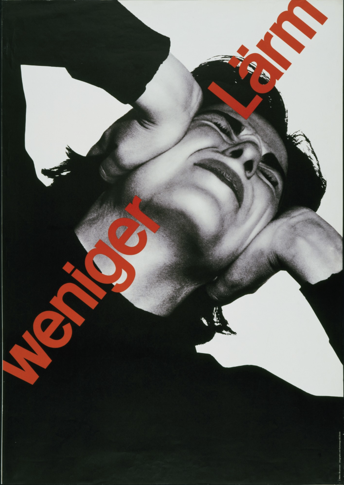
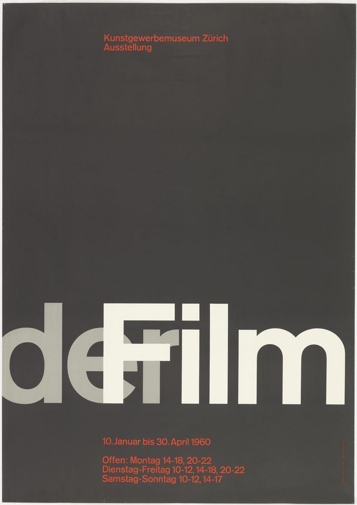
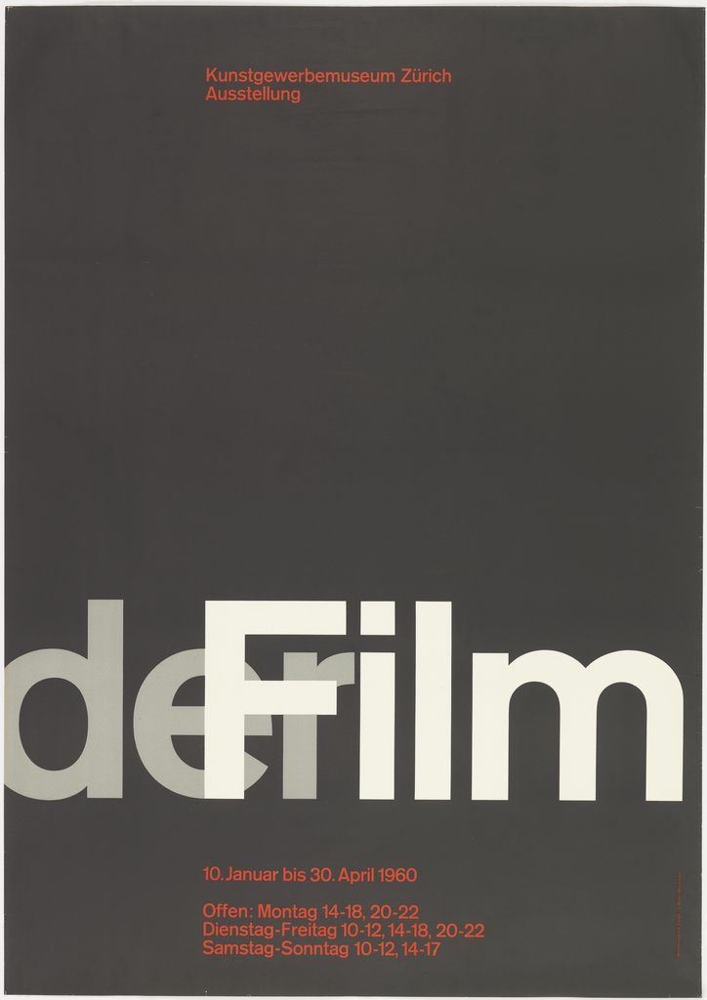
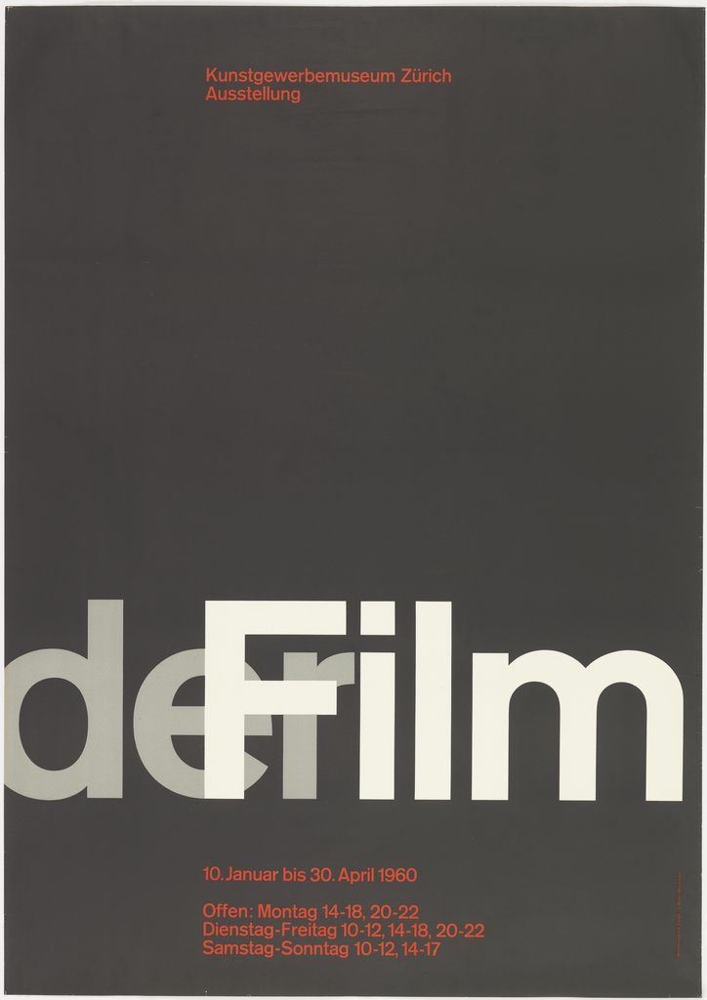

 


Brockmann is known for his Swiss-style minimalistic designs. His most famous works could be easily recognized, as he was perhaps one of the most well-known Swiss designers. His poster for the Zurich Town Hall Beethoven concert is his most recognized piece.